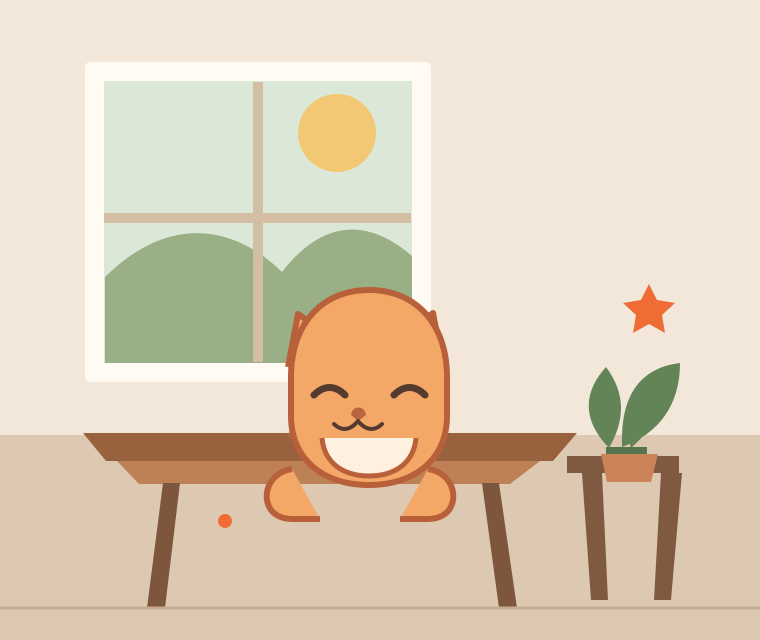

好好準備每一餐
重視餐點品質與貓咪飲食需求；實際食材、製作方式與餐點資訊待店家確認。
OUR STORY & VALUES
以一頓飯的時間，拉近人與貓的距離。
A PLACE TO MEET
尋寵餐廳的初衷，是打造一處讓人安心用餐、也能認識貓咪的友善空間。從料理到相處，希望每一次相遇都建立在尊重與照顧之上，也讓支持浪浪的心意有機會被看見。
創立背景與品牌實際經歷尚待店家提供；這段文字為依網站大綱整理的示範文案。
與貓咪共進溫暖美味食光。每一次溫柔相遇，KINDNESS FOR EVERY PAW
都從尊重開始。
WHAT WE CARE ABOUT
讓美味、友善與責任，一起成為日常的一部分。
重視餐點品質與貓咪飲食需求；實際食材、製作方式與餐點資訊待店家確認。
尊重貓咪意願與休息空間，不強迫接觸，讓相處回到舒服的節奏。
以正確資訊推廣認養觀念；合作單位與實際領養安排待店家確認。
MEET & ADOPT WITH CARE
目前未提供常駐店貓或待領養貓咪的個別資料，以下為領養流程示意。
了解貓咪個性、健康狀況與照護需求。
確認生活環境與家庭成員都準備好長期照顧。
依實際合作單位的流程完成諮詢與後續照護安排。
店貓介紹、合作送養單位及正式領養辦法待店家確認；本頁流程為示範內容。
A KIND VISIT
以不打擾貓咪、也照顧每位客人的方式享受用餐時光。
避免追逐或強抱，讓貓咪自行選擇是否互動。
保持平穩音量與動作，給貓咪安心的環境。
不進入貓咪休息區，也不擅自餵食或拿取物品。
遵守現場公告及工作人員指引，一起維護用餐安全。
以上守則為示範文案，請以店家正式公告與現場規範為準。
